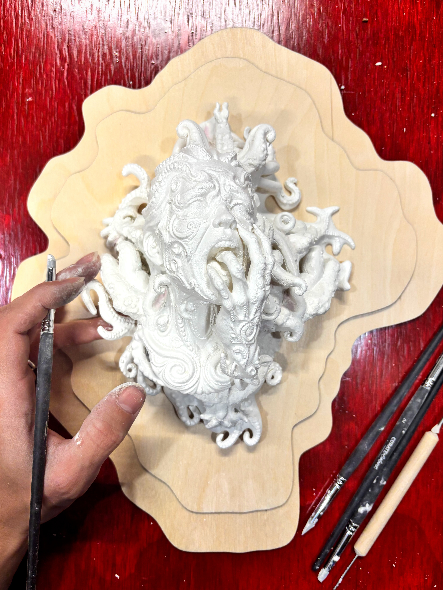

Student Spotlight
Carly Mills — The Image Fryer


Artwork
Sculpture, code, and the space between physical and digital.
Nameless Dread
My first real collaboration with AI
Nameless Dread
Generative animation


Vibe Coded Work
Projects built solely by prompting
sydneyparks.io
My portfolio website

My AI Workflows
3 AI-assisted workflows I created based on what I want to build
3D Printed Sculpture
Video & Projection
AI-Assisted Programming
Websites, Apps, Digital Art
Workflow: 3D Printed Sculpture
Other Projects

Workflow: AI Video
Workflow: Projection Mapping
Workflow: AI-Assisted Programming
My Vibe Code Process & Tips
Let Your Agent Build
Best practices for prompting your agent. Hover each card for details.
Pseudo Code
Remember this concept and use it when you describe what you want.

A simplified, human-readable description of what your program should do — written in plain language, not actual code. It lets you think through logic without worrying about syntax.
“When the user clicks the canvas, generate a new shape at that position. Each shape should inherit the color of the previous one but rotate 15 degrees.”
Be Descriptive
The more detail you give, the better the output.
Instead of “make it look nice,” say: “Use a dark background (#0a0a0a), thin white lines, and animate them with a sine wave that oscillates every 3 seconds.”
Break the project into components: layout, interaction, animation, color, typography. Describe each one separately.
Think Like a Composer
Each chat is a different musician in your orchestra.
Every musician in an orchestra has a strength. Treat each chat the same way — one for planning, one for building, one for troubleshooting, one for editing, one for critique. Don’t cross-pollinate.
UI Testing with Playwright CLI
Let your agent do the testing for you.
Playwright CLI lets your agent open a real browser, interact with your UI, and verify it works — all without you lifting a finger. Describe what to test and let Claude run it.
Model Selection
Switch models depending on the complexity of the task.
Let Your Agent Build
Useful /commands to know about
/model
Switch models mid-session. Use Opus for hard problems, Haiku for fast simple tasks.

Not every task needs the most powerful model. Match the model to the job:
Opus — complex reasoning, architecture decisions, hard bugs
Sonnet — everyday building, writing, iteration
Haiku — fast, lightweight tasks: quick edits, simple lookups, high-volume automation where speed and cost matter
/clear
Wipe the conversation and start fresh. Use between features to keep context clean.
/compact
Manually summarize the session to free up context space before hitting the limit.

When you hit the context limit, the agent auto-compacts: it summarizes earlier work to free up space but loses detail. Use /compact manually before that happens, or start a new chat when finishing a feature.
/mcp
Manage your MCP servers (plugins) — connect Figma, GitHub, browser control, and more.
/plugin
Install and manage Claude Code plugins — extend your agent with custom tools and integrations.
/context
Shows a snapshot of what’s currently loaded into your conversation’s context window — everything consuming tokens right now.
Demo
Watch the entire workflow come together — from sculpture to interactive screen, in real time.